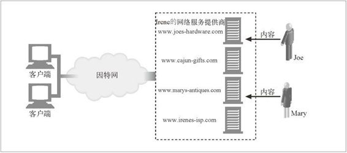

18.1 主机托管服务
在万维网的早期，每个组织自行购买自己的计算机硬件，搭建自己的计算机房，申请自己的网络连接，并管理自己的 Web 服务器软件。
随着 Web 迅速成为主流，每人都想要一个网站，但很少有人有能力或时间来搭建带空调的服务器机房，注册域名，或购买网络带宽。为了满足人们的迫切需求，出现了很多新的企业，提供了专业化管理的 Web 主机托管服务。服务级别有多种，从物理上的设备管理（提供空间、空调以及线缆）到完整的 Web 主机托管，顾客只需要提供内容就行了。
本章主要探讨托管 Web 服务器要提供什么服务。网站运作需要的很多东西（例如，它支持不同语言的能力和进行安全的电子商务交易的能力）都取决于托管 Web 服务器提供的功能。
简单例子——专用托管
假设 Joe 的五金商店和 Mary 的古董拍卖店都需要大容量的网站。Irene 网络服务提供商那里有很多机架，机架上全是一样的高性能 Web 服务器，可以租给 Joe 和 Mary，这样，他俩就不用自行购买自己的服务器并管理服务器软件了。
在图 18-1 中，Joe 和 Mary 都签约使用 Irene 的网络服务提供商提供的专用 Web 托管服务。Joe 租了专用的 Web 服务器，该服务器是 Irene 网络服务提供商购买和维护的。Mary 也从 Irene 网络服务提供商那里租了另一个专用服务器。Irene 网络服务提供商大批量地购买服务器硬件，它们选择的硬件经久耐用且相对便宜。如果 Joe 或 Mary 的网站变得更受欢迎，Irene 网络服务提供商可以立刻给 Joe 或 Mary 提供更多的服务器。

图 18-1 外包的专用托管服务
在这个例子中，浏览器向 Joe 服务器的 IP 地址发送对 www.joes-hardware.com 的 HTTP 请求，向 Mary 服务器（不同于 Joe）的 IP 地址发送对 www.marys-antiques.com 的请求。